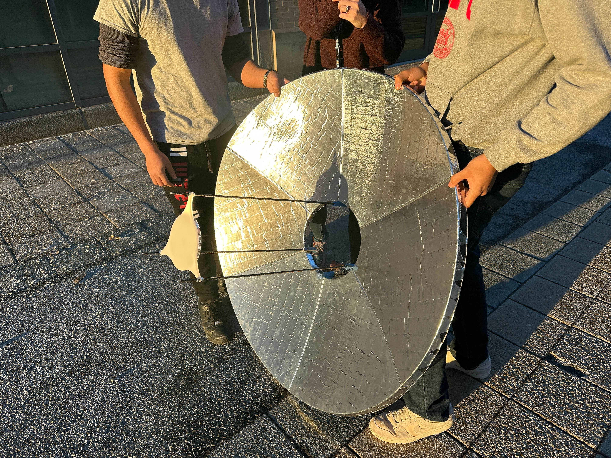

### Final Weeks: Assembly
Each section of the reflector dish was produced via thermoforming, as can be seen in the video below.
<video controls>
<source src="./thermoforming1.mp4" type="video/mp4">
</video>
Image below shows the finished plastic sheets
After this was done, each dish section was cut and grinded down to the correct side, and covered in reflective tape that was chosen as the reflective surface.
Tape was also placed over the bounce mirror, which was 3D printed.
The last step was assembling it all together.
First each dish:
Then, after each bracket was placed on, the threaded rods were installed in order to hold the bounce mirror up:
This is what the completed dish assembly looked like:

Once this was completed, we were able to install this on the rest of the solar cooker, as our semester came to a close.
<video controls>
<source src="./shorttest.mp4" type="video/mp4">
</video>
<video controls>
<source src="./testing.mp4" type="video/mp4">
</video>
There are a few improvements that can be made to the reflector. One is that it is not very rigid, so we anticipate that strong gusts of wind or other physical interactions with the environment could cause some warping of the dish to occur. A possible fix of this is to include an outer stiffening ring, or to try thermoforming the dish sections out of a thicker plastic.
Another thing we noticed is that the tape currently on the final prototype was causing light to scatter more than other tapes had in the past, so with more time, we would hopefully be able to identify the cause of this issue and maybe use a different reflective material.
Overall, this project was a great learning experience, and I had a blast seeing it all come together at the end of the class!
Here is some final facts about the refflector dish:
Team Members
Justin, Noah, Xavier, and Brittany
Smooth parabolic face with a concave bounce mirror
Focal length ~ 21 inches
Methods used:
3D printing
Thermoforming
CAD modeling
And here is a [link to the home page](../index.html).